def vis(STdata):
N = STdata.shape[1]
fig, ax = plt.subplots(5,1,(15,5))
for n in range(N):
ax[n].plot(fiveVTS[:,0])
#fig.set_width()
fig.set_height(N*5)
return fig 1st ST-GCN Example dividing train and test
ST-GCN
Try to divide train and test(GNAR fivenet)
import
import rpy2
import rpy2.robjects as ro
from rpy2.robjects.vectors import FloatVector
from rpy2.robjects.packages import importr
import torch
import numpy as np
from tqdm import tqdm
import torch.nn.functional as F
from torch_geometric_temporal.nn.recurrent import GConvGRU
import matplotlib.pyplot as plt
import pandas as pd
import time
from scipy.interpolate import interp1dclass RecurrentGCN(torch.nn.Module):
def __init__(self, node_features, filters):
super(RecurrentGCN, self).__init__()
self.recurrent = GConvGRU(node_features, filters, 2)
self.linear = torch.nn.Linear(filters, 1)
def forward(self, x, edge_index, edge_weight):
h = self.recurrent(x, edge_index, edge_weight)
h = F.relu(h)
h = self.linear(h)
return hR
%load_ext rpy2.ipython%%R
library(GNAR)
library(igraph)R[write to console]: Loading required package: igraph
R[write to console]:
Attaching package: ‘igraph’
R[write to console]: The following objects are masked from ‘package:stats’:
decompose, spectrum
R[write to console]: The following object is masked from ‘package:base’:
union
R[write to console]: Loading required package: wordcloud
R[write to console]: Loading required package: RColorBrewer
Data
%%R
edges <- as.matrix(fiveNet)
data("fiveNode")%R -o fiveVTS
%R -o edges- node: 5
- time 200
functions
def vis(spatiotemporaldata):
N = spatiotemporaldata.shape[1]
fig, ax = plt.subplots(N,1)
for n in range(N):
ax[n].plot(spatiotemporaldata[:,n])
ax[n].set_title('node='+str(n))
#fig.set_width()
fig.set_figheight(N*2)
fig.tight_layout()
return fig def vis2(spatiotemporaldata1,spatiotemporaldata2):
N = spatiotemporaldata1.shape[1]
fig, ax = plt.subplots(N,1)
for n in range(N):
ax[n].plot(spatiotemporaldata1[:,n],label='data1')
ax[n].plot(spatiotemporaldata2[:,n],label='data2')
ax[n].set_title('node='+str(n))
ax[n].legend()
#fig.set_width()
fig.set_figheight(N*2)
fig.tight_layout()
return fig edges_tensor = torch.tensor(edges)nonzero_indices = edges_tensor.nonzero()fiveNet_edge = np.array(nonzero_indices).TT = 200
N = 5 # number of Nodes
E = fiveNet_edge
V = np.array([1,2,3,4,5])
t = np.arange(0,T)
node_features = 1edge_index = torch.tensor(E)
edge_attr = torch.tensor(np.array([1,1,1,1,1,1,1,1,1,1]),dtype=torch.float32)vis(fiveVTS);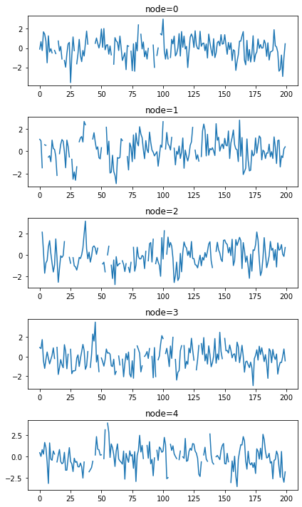
fiveVTS_train = fiveVTS[:int(len(fiveVTS)*0.8)]
fiveVTS_test = fiveVTS[int(len(fiveVTS)*0.8):]vis(fiveVTS_train);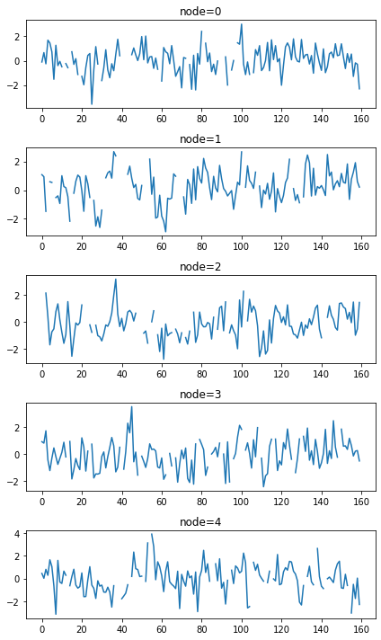
vis(fiveVTS_test);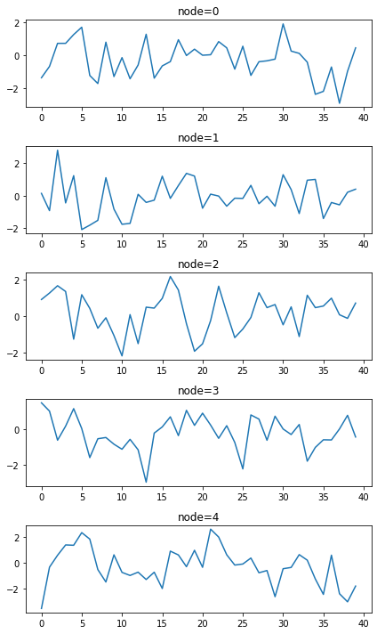
Random Missing Values
np.random.seed(1)
seed_number1 = np.random.choice(159,16,replace=False)np.random.seed(3)
seed_number2 = np.random.choice(159,16,replace=False)np.random.seed(5)
seed_number3 = np.random.choice(159,16,replace=False)np.random.seed(7)
seed_number4 = np.random.choice(159,16,replace=False)np.random.seed(9)
seed_number5 = np.random.choice(159,16,replace=False)fiveVTS_train_backup = fiveVTS_train.copy()fiveVTS_train[seed_number1,0] = float('nan')fiveVTS_train[seed_number2,1] = float('nan')fiveVTS_train[seed_number3,2] = float('nan')fiveVTS_train[seed_number4,3] = float('nan')fiveVTS_train[seed_number5,4] = float('nan')vis(fiveVTS_train);
1. Mean
fiveVTS_train_mean = fiveVTS_train.copy()fiveVTS_train_mean[seed_number1,0] = np.nanmean(fiveVTS_train_mean[:,0])fiveVTS_train_mean[seed_number2,1] = np.nanmean(fiveVTS_train_mean[:,1])fiveVTS_train_mean[seed_number3,2] = np.nanmean(fiveVTS_train_mean[:,2])fiveVTS_train_mean[seed_number4,3] = np.nanmean(fiveVTS_train_mean[:,3])fiveVTS_train_mean[seed_number5,4] = np.nanmean(fiveVTS_train_mean[:,4])vis(fiveVTS_train_mean);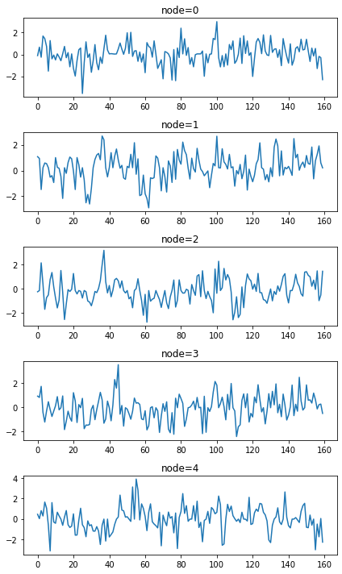
1) ST-GCN
mean_f_fiveVTS_train = torch.tensor(fiveVTS_train_mean).reshape(160,5,1).float()mean_X_fiveVTS = mean_f_fiveVTS_train[:159,:,:]
mean_y_fiveVTS = mean_f_fiveVTS_train[1:,:,:]model = RecurrentGCN(node_features=1, filters=4)
optimizer = torch.optim.Adam(model.parameters(), lr=0.01)
model.train()
for epoch in tqdm(range(50)):
for time, (xt,yt) in enumerate(zip(mean_X_fiveVTS,mean_y_fiveVTS)):
y_hat = model(xt, edge_index, edge_attr)
cost = torch.mean((y_hat-yt)**2)
cost.backward()
optimizer.step()
optimizer.zero_grad()100%|██████████| 50/50 [00:27<00:00, 1.84it/s]mean_fhat_fiveVTS = torch.stack([model(xt, edge_index, edge_attr) for xt in mean_X_fiveVTS]).detach().numpy()xt_test = torch.tensor(fiveVTS_test.reshape(40,5,1)[:-1,:,:]).float()mean_fhat_fiveVTS_forecast = torch.stack([model(xt, edge_index, edge_attr) for xt in xt_test]).detach().numpy()vis2(fiveVTS_test[1:],mean_fhat_fiveVTS_forecast);
vis2(fiveVTS_train_mean,mean_fhat_fiveVTS);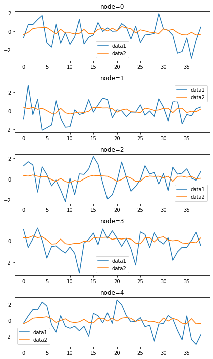
2) Fourier transform
w=np.zeros((159*N,159*N))for i in range(159*N):
for j in range(159*N):
if i==j :
w[i,j] = 0
elif np.abs(i-j) <= 1 :
w[i,j] = 1# np.fft(mean_fhat_fiveVTS[:,0,0])# mean_fhat_fiveVTS.shape# fft_result =np.stack([np.fft.fft(mean_fhat_fiveVTS[:,n,0]) for n in range(N)]).T# plt.plot(abs(fft_result[:,0])**2)d = np.array(w.sum(axis=1))
D = np.diag(d)
L = np.array(np.diag(1/np.sqrt(d)) @ (D-w) @ np.diag(1/np.sqrt(d)))
lamb, Psi = np.linalg.eigh(L)
Lamb = np.diag(lamb)fhatbar = Psi.T @ mean_fhat_fiveVTS.reshape(159*N,1)3) Ebayes
ebayesthresh = importr('EbayesThresh').ebayesthresh
fhatbar_threshed = ebayesthresh(FloatVector(fhatbar))plt.plot(fhatbar)
plt.plot(fhatbar_threshed)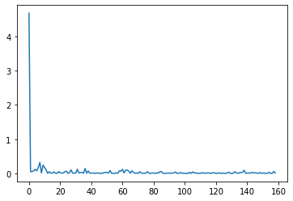
4) Inverse Fourier transform
fhatbarhat = Psi @ fhatbar_threshed
fhatbarhat_mean_spatio_temporal = fhatbarhat.reshape(159,N,1)vis2(mean_fhat_fiveVTS,fhatbarhat_mean_spatio_temporal.reshape(159,5));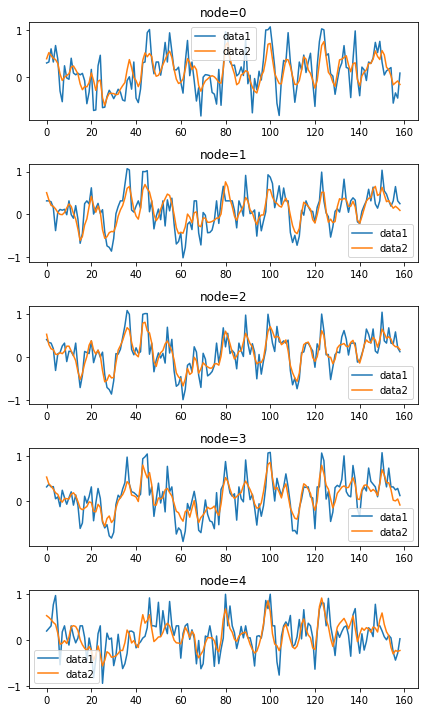
5) ST-GCN
fiveVTS_train_mean[seed_number1,0] = fhatbarhat_mean_spatio_temporal[seed_number1,0,0]
fiveVTS_train_mean[seed_number2,1] = fhatbarhat_mean_spatio_temporal[seed_number2,1,0]
fiveVTS_train_mean[seed_number3,2] = fhatbarhat_mean_spatio_temporal[seed_number3,2,0]
fiveVTS_train_mean[seed_number4,3] = fhatbarhat_mean_spatio_temporal[seed_number4,3,0]
fiveVTS_train_mean[seed_number5,4] = fhatbarhat_mean_spatio_temporal[seed_number5,4,0]
vis(fiveVTS_train_mean);
model = RecurrentGCN(node_features=1, filters=4)
optimizer = torch.optim.Adam(model.parameters(), lr=0.01)
model.train()
for epoch in tqdm(range(50)):
for time, (xt,yt) in enumerate(zip(mean_X_fiveVTS,mean_y_fiveVTS)):
y_hat = model(xt, edge_index, edge_attr)
cost = torch.mean((y_hat-yt)**2)
cost.backward()
optimizer.step()
optimizer.zero_grad()100%|██████████| 50/50 [00:26<00:00, 1.88it/s]mean_fhat_spatio_temporal = torch.stack([model(xt, edge_index, edge_attr) for xt in mean_X_fiveVTS]).detach().numpy()mean_fhat_spatio_temporal_test = torch.stack([model(xt, edge_index, edge_attr) for xt in xt_test]).detach().numpy()vis2(fiveVTS_test[1:],mean_fhat_spatio_temporal_test);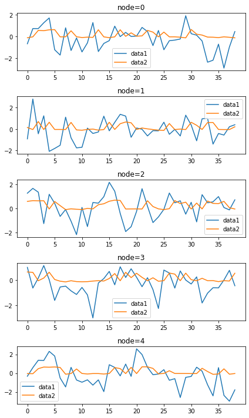
vis2(fhatbarhat_mean_spatio_temporal,mean_fhat_spatio_temporal);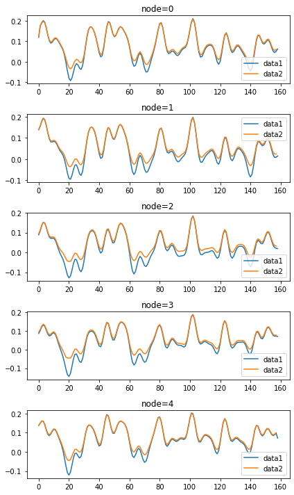
for i in tqdm(range(50)):
## GFT
fhatbar = Psi.T @ mean_fhat_fiveVTS.reshape(159*N,1)
## Ebayes
ebayesthresh = importr('EbayesThresh').ebayesthresh
fhatbar_threshed = ebayesthresh(FloatVector(fhatbar))
#plt.plot(fhatbar)
#plt.plot(fhatbar_threshed)
## inverse GFT
fhatbarhat = Psi @ fhatbar_threshed
fhatbarhat_mean_spatio_temporal = fhatbarhat.reshape(159,N,1)
#vis2(mean_fhat_fiveVTS,fhatbarhat_mean_spatio_temporal.reshape(159,5));
## STGCN
fiveVTS_train_mean[seed_number1,0] = fhatbarhat_mean_spatio_temporal[seed_number1,0,0]
fiveVTS_train_mean[seed_number2,1] = fhatbarhat_mean_spatio_temporal[seed_number1,1,0]
fiveVTS_train_mean[seed_number3,2] = fhatbarhat_mean_spatio_temporal[seed_number1,2,0]
fiveVTS_train_mean[seed_number4,3] = fhatbarhat_mean_spatio_temporal[seed_number1,3,0]
fiveVTS_train_mean[seed_number5,4] = fhatbarhat_mean_spatio_temporal[seed_number1,4,0]
#vis(fiveVTS_train_mean);
#model = RecurrentGCN(node_features=1, filters=4)
#optimizer = torch.optim.Adam(model.parameters(), lr=0.01)
#model.train()
for epoch in range(1):
for time, (xt,yt) in enumerate(zip(mean_X_fiveVTS,mean_y_fiveVTS)):
y_hat = model(xt, edge_index, edge_attr)
cost = torch.mean((y_hat-yt)**2)
cost.backward()
optimizer.step()
optimizer.zero_grad()
mean_fhat_spatio_temporal = torch.stack([model(xt, edge_index, edge_attr) for xt in mean_X_fiveVTS]).detach().numpy()
mean_fhat_spatio_temporal_test = torch.stack([model(xt, edge_index, edge_attr) for xt in xt_test]).detach().numpy()
#vis2(fiveVTS_test[1:],mean_fhat_spatio_temporal_test);
#vis2(fiveVTS_train_backup,mean_fhat_spatio_temporal);100%|██████████| 50/50 [00:55<00:00, 1.10s/it]vis2(fiveVTS_train_backup,mean_fhat_spatio_temporal);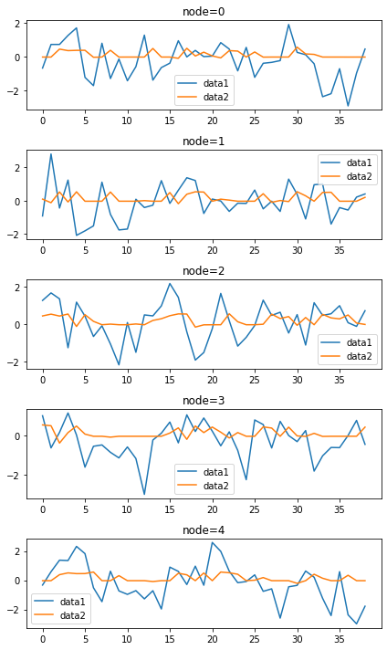
vis2(fiveVTS_train_backup,mean_fhat_spatio_temporal);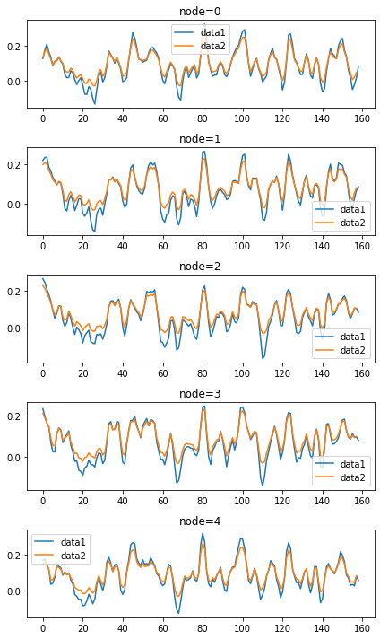
6) Fourier transform
w=np.zeros((159*N,159*N))for i in range(159*N):
for j in range(159*N):
if i==j :
w[i,j] = 0
elif np.abs(i-j) <= 1 :
w[i,j] = 1d = np.array(w.sum(axis=1))
D = np.diag(d)
L = np.array(np.diag(1/np.sqrt(d)) @ (D-w) @ np.diag(1/np.sqrt(d)))
lamb, Psi = np.linalg.eigh(L)
Lamb = np.diag(lamb)fhatbar = Psi.T @ mean_fhat_spatio_temporal.reshape(159*N,1)
power = fhatbar**2 7) Ebayes
ebayesthresh = importr('EbayesThresh').ebayesthresh
fhatbar_threshed = ebayesthresh(FloatVector(fhatbar))plt.plot(fhatbar)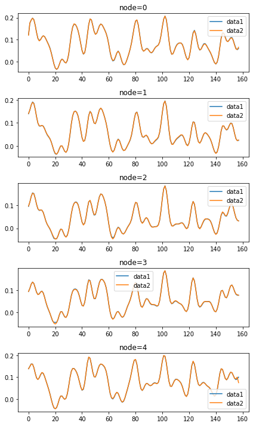
plt.plot(fhatbar)
plt.plot(fhatbar_threshed)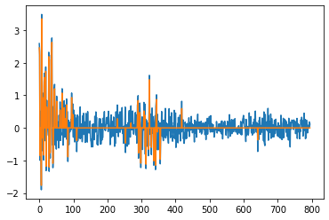
8) Inverse Fourier transform
fhatbarhat = Psi @ fhatbar_threshed
fhatbarhat_mean_spatio_temporal2 = fhatbarhat.reshape(159,N,1)vis2(mean_fhat_spatio_temporal,fhatbarhat_mean_spatio_temporal2.reshape(159,5));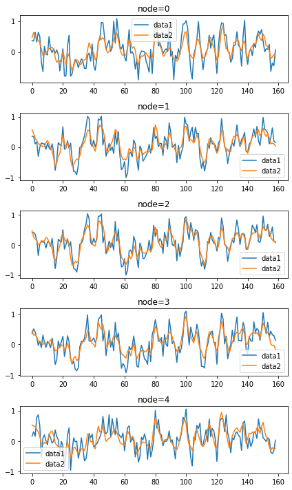
9) ST-GCN
fiveVTS_train_mean[seed_number1,0] = fhatbarhat_mean_spatio_temporal[seed_number1,0,0]
fiveVTS_train_mean[seed_number2,1] = fhatbarhat_mean_spatio_temporal[seed_number2,1,0]
fiveVTS_train_mean[seed_number3,2] = fhatbarhat_mean_spatio_temporal[seed_number3,2,0]
fiveVTS_train_mean[seed_number4,3] = fhatbarhat_mean_spatio_temporal[seed_number4,3,0]
fiveVTS_train_mean[seed_number5,4] = fhatbarhat_mean_spatio_temporal[seed_number5,4,0]
vis(fiveVTS_train_mean);
model = RecurrentGCN(node_features=1, filters=4)
optimizer = torch.optim.Adam(model.parameters(), lr=0.01)
model.train()
for epoch in tqdm(range(50)):
for time, (xt,yt) in enumerate(zip(mean_X_fiveVTS,mean_y_fiveVTS)):
y_hat = model(xt, edge_index, edge_attr)
cost = torch.mean((y_hat-yt)**2)
cost.backward()
optimizer.step()
optimizer.zero_grad()100%|██████████| 50/50 [00:27<00:00, 1.84it/s]mean_fhat_spatio_temporal2 = torch.stack([model(xt, edge_index, edge_attr) for xt in mean_X_fiveVTS]).detach().numpy()mean_fhat_spatio_temporal_test2 = torch.stack([model(xt, edge_index, edge_attr) for xt in xt_test]).detach().numpy()vis2(fiveVTS_test[1:],mean_fhat_spatio_temporal_test2);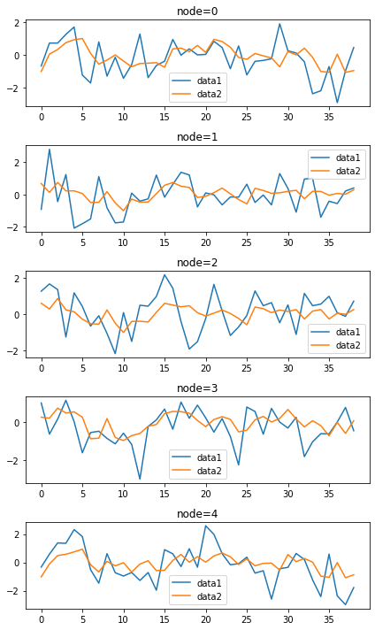
vis2(fhatbarhat_mean_spatio_temporal2,mean_fhat_spatio_temporal2);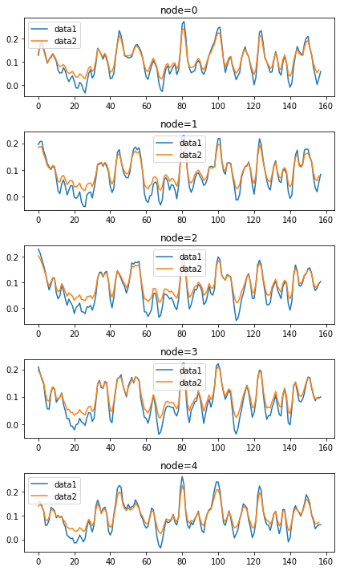
10) Fourier transform
w=np.zeros((159*N,159*N))for i in range(159*N):
for j in range(159*N):
if i==j :
w[i,j] = 0
elif np.abs(i-j) <= 1 :
w[i,j] = 1d = np.array(w.sum(axis=1))
D = np.diag(d)
L = np.array(np.diag(1/np.sqrt(d)) @ (D-w) @ np.diag(1/np.sqrt(d)))
lamb, Psi = np.linalg.eigh(L)
Lamb = np.diag(lamb)fhatbar = Psi.T @ mean_fhat_spatio_temporal.reshape(159*N,1)
power = fhatbar**2 11) Ebayes
ebayesthresh = importr('EbayesThresh').ebayesthresh
fhatbar_threshed = ebayesthresh(FloatVector(fhatbar))12) Inverse Fourier transform
fhatbarhat = Psi @ fhatbar_threshed
fhatbarhat_mean_spatio_temporal3 = fhatbarhat.reshape(159,N,1)13) ST-GCN
fiveVTS_train_mean[seed_number1,0] = fhatbarhat_mean_spatio_temporal[seed_number1,0,0]
fiveVTS_train_mean[seed_number2,1] = fhatbarhat_mean_spatio_temporal[seed_number2,1,0]
fiveVTS_train_mean[seed_number3,2] = fhatbarhat_mean_spatio_temporal[seed_number3,2,0]
fiveVTS_train_mean[seed_number4,3] = fhatbarhat_mean_spatio_temporal[seed_number4,3,0]
fiveVTS_train_mean[seed_number5,4] = fhatbarhat_mean_spatio_temporal[seed_number5,4,0]
vis(fiveVTS_train_mean);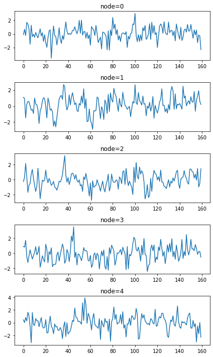
model = RecurrentGCN(node_features=1, filters=4)
optimizer = torch.optim.Adam(model.parameters(), lr=0.01)
model.train()
for epoch in tqdm(range(50)):
for time, (xt,yt) in enumerate(zip(mean_X_fiveVTS,mean_y_fiveVTS)):
y_hat = model(xt, edge_index, edge_attr)
cost = torch.mean((y_hat-yt)**2)
cost.backward()
optimizer.step()
optimizer.zero_grad()100%|██████████| 50/50 [00:26<00:00, 1.86it/s]mean_fhat_spatio_temporal3 = torch.stack([model(xt, edge_index, edge_attr) for xt in mean_X_fiveVTS]).detach().numpy()mean_fhat_spatio_temporal_test3 = torch.stack([model(xt, edge_index, edge_attr) for xt in xt_test]).detach().numpy()vis2(fiveVTS_test[1:],mean_fhat_spatio_temporal_test3);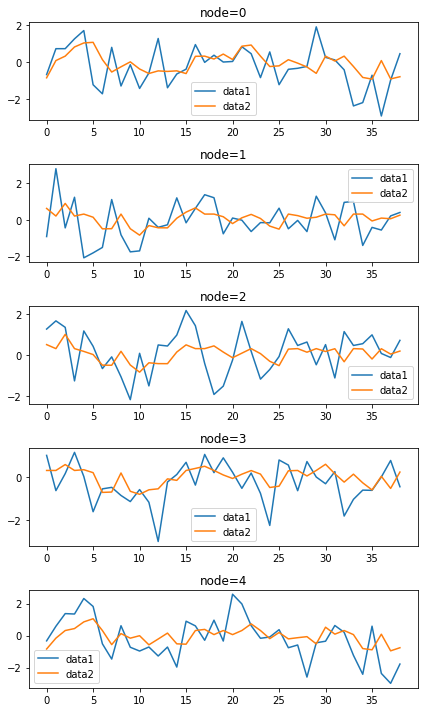
vis2(fhatbarhat_mean_spatio_temporal3,mean_fhat_spatio_temporal3);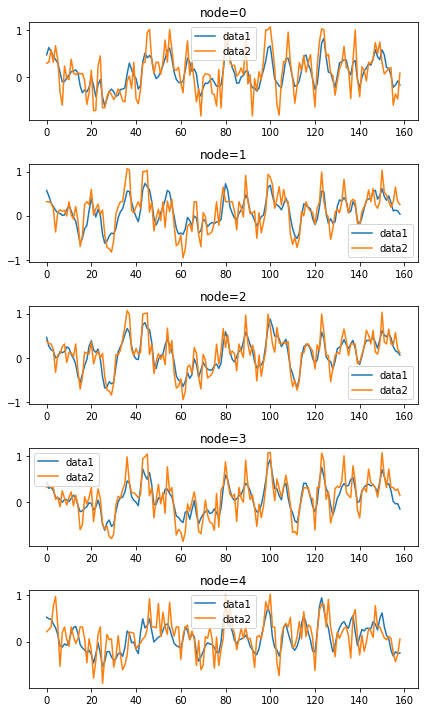
one = []
for i in range(N):
one.append(np.mean((fiveVTS_test[1:,i] - mean_fhat_fiveVTS_forecast.reshape(39,5)[:,i])))two = []
for i in range(N):
two.append(np.mean((fiveVTS_test[1:,i] - mean_fhat_spatio_temporal_test.reshape(39,5)[:,i])))three = []
for i in range(N):
three.append(np.mean((fiveVTS_test[1:,i] - mean_fhat_spatio_temporal_test2.reshape(39,5)[:,i])))four = []
for i in range(N):
four.append(np.mean((fiveVTS_test[1:,i] - mean_fhat_spatio_temporal_test3.reshape(39,5)[:,i])))pd.DataFrame({'one':one,'two':two,'three':three,'four':four})| one | two | three | four | |
|---|---|---|---|---|
| 0 | -0.196310 | -0.189000 | -0.173563 | -0.200559 |
| 1 | -0.161632 | -0.135003 | -0.142250 | -0.159892 |
| 2 | 0.079347 | 0.106893 | 0.108179 | 0.079011 |
| 3 | -0.267653 | -0.244438 | -0.248220 | -0.269292 |
| 4 | -0.162464 | -0.135709 | -0.130221 | -0.167336 |
2. Linear Interpolation
_df = pd.DataFrame(fiveVTS_train)
_df.interpolate(method='linear', inplace=True)
_df = _df.fillna(0)linear_fiveVTS_train = np.array(_df).reshape(160,5)1) ST-GCN
linear_f_fiveVTS_train = torch.tensor(linear_fiveVTS_train).reshape(160,5,1).float()linear_X_fiveVTS = linear_f_fiveVTS_train[:159,:,:]
linear_y_fiveVTS = linear_f_fiveVTS_train[1:,:,:]model = RecurrentGCN(node_features=1, filters=4)
optimizer = torch.optim.Adam(model.parameters(), lr=0.01)
model.train()
for epoch in tqdm(range(50)):
for time, (xt,yt) in enumerate(zip(linear_X_fiveVTS,linear_y_fiveVTS)):
y_hat = model(xt, edge_index, edge_attr)
cost = torch.mean((y_hat-yt)**2)
cost.backward()
optimizer.step()
optimizer.zero_grad()linear_fhat_fiveVTS = torch.stack([model(xt, edge_index, edge_attr) for xt in linear_X_fiveVTS]).detach().numpy()xt_test = torch.tensor(fiveVTS_test.reshape(40,5,1)[:-1,:,:]).float()linear_fhat_fiveVTS_forecast = torch.stack([model(xt, edge_index, edge_attr) for xt in xt_test]).detach().numpy()vis2(fiveVTS_test[1:],linear_fhat_fiveVTS_forecast);vis2(linear_fiveVTS_train,linear_f_fiveVTS_train);2) Fourier transform
w=np.zeros((159*N,159*N))for i in range(159*N):
for j in range(159*N):
if i==j :
w[i,j] = 0
elif np.abs(i-j) <= 1 :
w[i,j] = 1d = np.array(w.sum(axis=1))
D = np.diag(d)
L = np.array(np.diag(1/np.sqrt(d)) @ (D-w) @ np.diag(1/np.sqrt(d)))
lamb, Psi = np.linalg.eigh(L)
Lamb = np.diag(lamb)fhatbar = Psi.T @ linear_fhat_fiveVTS.reshape(159*N,1)
power = fhatbar**2 3) Ebayes
plt.plot(fhatbar.reshape(159,5)[:,0]**2)ebayesthresh = importr('EbayesThresh').ebayesthresh
fhatbar_threshed = ebayesthresh(FloatVector(fhatbar))plt.plot(fhatbar)
plt.plot(fhatbar_threshed)4) Inverse Fourier transform
fhatbarhat = Psi @ fhatbar_threshed
fhatbarhat_linear_spatio_temporal = fhatbarhat.reshape(159,N,1)vis2(linear_fhat_fiveVTS,fhatbarhat_linear_spatio_temporal.reshape(159,5));5) ST-GCN
linear_spatio_temporal = torch.tensor(fhatbarhat_linear_spatio_temporal).reshape(159,5,1).float()linear_X_spatio_temporal = linear_spatio_temporal[:158,:,:]
linear_y_spatio_temporal = linear_spatio_temporal[1:,:,:]model = RecurrentGCN(node_features=1, filters=4)
optimizer = torch.optim.Adam(model.parameters(), lr=0.01)
model.train()
for epoch in tqdm(range(50)):
for time, (xt,yt) in enumerate(zip(linear_X_spatio_temporal,linear_y_spatio_temporal)):
y_hat = model(xt, edge_index, edge_attr)
cost = torch.mean((y_hat-yt)**2)
cost.backward()
optimizer.step()
optimizer.zero_grad()linear_fhat_spatio_temporal = torch.stack([model(xt, edge_index, edge_attr) for xt in linear_X_spatio_temporal]).detach().numpy()linear_fhat_spatio_temporal_test = torch.stack([model(xt, edge_index, edge_attr) for xt in xt_test]).detach().numpy()vis2(fiveVTS_test[1:],linear_fhat_spatio_temporal_test);vis2(fhatbarhat_linear_spatio_temporal,linear_fhat_spatio_temporal);6) Fourier transform
w=np.zeros((158*N,158*N))for i in range(158*N):
for j in range(158*N):
if i==j :
w[i,j] = 0
elif np.abs(i-j) <= 1 :
w[i,j] = 1d = np.array(w.sum(axis=1))
D = np.diag(d)
L = np.array(np.diag(1/np.sqrt(d)) @ (D-w) @ np.diag(1/np.sqrt(d)))
lamb, Psi = np.linalg.eigh(L)
Lamb = np.diag(lamb)fhatbar = Psi.T @ linear_fhat_spatio_temporal.reshape(158*N,1)
power = fhatbar**2 7) Ebayes
ebayesthresh = importr('EbayesThresh').ebayesthresh
fhatbar_threshed = ebayesthresh(FloatVector(fhatbar))plt.plot(fhatbar)
plt.plot(fhatbar_threshed)8) Inverse Fourier transform
fhatbarhat = Psi @ fhatbar_threshed
fhatbarhat_linear_spatio_temporal2 = fhatbarhat.reshape(158,N,1)vis2(linear_fhat_spatio_temporal,fhatbarhat_linear_spatio_temporal2.reshape(158,5));9) ST-GCN
linear_spatio_temporal2 = torch.tensor(fhatbarhat_linear_spatio_temporal2).reshape(158,5,1).float()linear_X_spatio_temporal2 = linear_spatio_temporal2[:157,:,:]
linear_y_spatio_temporal2 = linear_spatio_temporal2[1:,:,:]model = RecurrentGCN(node_features=1, filters=4)
optimizer = torch.optim.Adam(model.parameters(), lr=0.01)
model.train()
for epoch in tqdm(range(50)):
for time, (xt,yt) in enumerate(zip(linear_X_spatio_temporal2,linear_y_spatio_temporal2)):
y_hat = model(xt, edge_index, edge_attr)
cost = torch.mean((y_hat-yt)**2)
cost.backward()
optimizer.step()
optimizer.zero_grad()linear_fhat_spatio_temporal2 = torch.stack([model(xt, edge_index, edge_attr) for xt in linear_X_spatio_temporal2]).detach().numpy()linear_fhat_spatio_temporal_test2 = torch.stack([model(xt, edge_index, edge_attr) for xt in xt_test]).detach().numpy()vis2(fiveVTS_test[1:],linear_fhat_spatio_temporal_test2);vis2(fhatbarhat_linear_spatio_temporal2,linear_fhat_spatio_temporal2);one = []
for i in range(N):
one.append(np.mean((fiveVTS_test[1:,i] - linear_fhat_fiveVTS_forecast.reshape(39,5)[:,i])))two = []
for i in range(N):
two.append(np.mean((fiveVTS_test[1:,i] - linear_fhat_spatio_temporal_test.reshape(39,5)[:,i])))three = []
for i in range(N):
three.append(np.mean((fiveVTS_test[1:,i] - linear_fhat_spatio_temporal_test2.reshape(39,5)[:,i])))pd.DataFrame({'one':one,'two':two,'three':three})10) Fourier transform
w=np.zeros((157*N,157*N))for i in range(157*N):
for j in range(157*N):
if i==j :
w[i,j] = 0
elif np.abs(i-j) <= 1 :
w[i,j] = 1d = np.array(w.sum(axis=1))
D = np.diag(d)
L = np.array(np.diag(1/np.sqrt(d)) @ (D-w) @ np.diag(1/np.sqrt(d)))
lamb, Psi = np.linalg.eigh(L)
Lamb = np.diag(lamb)fhatbar = Psi.T @ linear_fhat_spatio_temporal2.reshape(157*N,1)11) Ebayes
ebayesthresh = importr('EbayesThresh').ebayesthresh
fhatbar_threshed = ebayesthresh(FloatVector(fhatbar))plt.plot(fhatbar)
plt.plot(fhatbar_threshed)12) Inverse Fourier transform
fhatbarhat = Psi @ fhatbar_threshed
fhatbarhat_linear_spatio_temporal3 = fhatbarhat.reshape(157,N,1)vis2(linear_fhat_spatio_temporal2,fhatbarhat_linear_spatio_temporal3.reshape(157,5));13) ST-GCN
linear_spatio_temporal3 = torch.tensor(fhatbarhat_linear_spatio_temporal3).reshape(157,5,1).float()linear_X_spatio_temporal3 = linear_spatio_temporal3[:156,:,:]
linear_y_spatio_temporal3 = linear_spatio_temporal3[1:,:,:]model = RecurrentGCN(node_features=1, filters=4)
optimizer = torch.optim.Adam(model.parameters(), lr=0.01)
model.train()
for epoch in tqdm(range(50)):
for time, (xt,yt) in enumerate(zip(linear_X_spatio_temporal3,linear_y_spatio_temporal3)):
y_hat = model(xt, edge_index, edge_attr)
cost = torch.mean((y_hat-yt)**2)
cost.backward()
optimizer.step()
optimizer.zero_grad()linear_fhat_spatio_temporal3 = torch.stack([model(xt, edge_index, edge_attr) for xt in linear_X_spatio_temporal3]).detach().numpy()linear_fhat_spatio_temporal_test3 = torch.stack([model(xt, edge_index, edge_attr) for xt in xt_test]).detach().numpy()vis2(fiveVTS_test[1:],linear_fhat_spatio_temporal_test3);vis2(fhatbarhat_linear_spatio_temporal3,linear_fhat_spatio_temporal3);one = []
for i in range(N):
one.append(np.mean((fiveVTS_test[1:,i] - linear_fhat_fiveVTS_forecast.reshape(39,5)[:,i])))two = []
for i in range(N):
two.append(np.mean((fiveVTS_test[1:,i] - linear_fhat_spatio_temporal_test.reshape(39,5)[:,i])))three = []
for i in range(N):
three.append(np.mean((fiveVTS_test[1:,i] - linear_fhat_spatio_temporal_test2.reshape(39,5)[:,i])))four = []
for i in range(N):
four.append(np.mean((fiveVTS_test[1:,i] - linear_fhat_spatio_temporal_test3.reshape(39,5)[:,i])))pd.DataFrame({'one':one,'two':two,'three':three,'four':four})3. GNAR
mean
%R -i fiveVTS_train_mean%%R
meanprediction <- predict(GNARfit(vts = fiveVTS_train_mean[1:160,], net = fiveNet, alphaOrder = 2, betaOrder = c(1, 1)),n.ahead=40)%R -o meanpredictiona = []
for i in range(40):
a.append((meanprediction.reshape(40,5)[i] - fiveVTS_test[i]))((pd.DataFrame(a))**2).mean(axis=0)0 1.256051
1 1.083987
2 1.117363
3 0.952564
4 1.943335
dtype: float64((pd.DataFrame(a))**2).mean(axis=0).mean()1.270659819100067